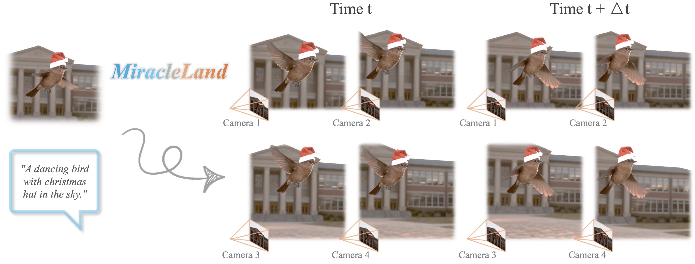

MiracleLand: Zero-shot 4D World Modeling
from a Single Image
Yuelei Li1, Zhengyang Lin2, Kunhao Liu3, Fangneng Zhan4, Georgia Gkioxari1
1Caltech 2NUS 3NTU 4MIT
Abstract
We present MiracleLand, a novel framework for dynamic 3D scene generation conditioned on image and text. Existing methods on dynamic 3D scene generation either require a physics simulator to solve the scene dynamics based on the dynamic objects' materials that are not generalizable to complicated real-world scenes, or require computationally expensive large-scale training. In contrast, we present a zero-shot, simulation-free pipeline that takes advantage of powerful pretrained video generation models to generalize effectively to complex real-world scenes. Our method first uses a pretrained image and text to video model to synthesize a monocular video, and subsequently reconstructs the dynamic 3D scene using 4D Gaussian Splatting. However, directly applying vanilla 4D Gaussian Splatting to monocular videos often leads to artifacts due to incomplete geometry and view inconsistency. To address these problems, we introduce 1) a geometry-based 4D Gaussian initialization to enhance structural accuracy, 2) an inpainting layering strategy to resolve disocclusion hole artifacts that emerge under novel-view rendering, and 3) a view-plane–constrained splatting to avoid floating Gaussian points. The resulting 4D Gaussians enable controllable rendering from different viewing angles.
